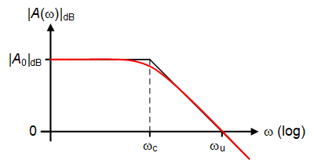

| Parameter | Symbol | Value | Unit |
|---|---|---|---|
| Clock frequency | \(f_{{ck}}\) | 1 | \(MHz\) |
| Clock period | \(T_s\) | 1 | \(\mu s\) |
| Settling time | \(t_{{set}}\) | 500 | \(ns\) |
| Settling error | \(\varepsilon_{{set}}\) | 0.001 | - |
| Ideal DC gain | \(A_{{0,ideal}}\) | -1 | - |
| OTA DC gain | \(A_{{dc}}\) | 1000 | - |
| Feedback capacitance | \(C_F\) | 1 | \(pF\) |
| Load capacitance | \(C_L\) | 0.1 | \(pF\) |
| Input capacitance | \(C_{{in}}\) | 10 | \(fF\) |
| Input step | \(\Delta V_{{in}}\) | -10 | \(mV\) |
OTA with Capacitive Feedback
Step Response (Version 1)
1 Introduction
The design of OTAs used in SC circuits requires a good estimation of the required settling time to make sure that the charge transfer is complete. In this notebook we start with a linear analysis of the amplifier for deriving the small-signal settling time. However, the OTA show a very nonlinear behavior, particularly when it is biased in weak inversion. As soon as its differential input voltage gets larger than a few \(U_T\), the output current saturates and the output voltage is then slewing before recovering the linear settling. This slewing period obviously increases the settling time and can even become dominant for low-power OTA where the bias current of the input differential pair is very small. We therefore will conduct a nonlinear analysis to derive an expression of the settling time that includes this period of slewing [1].
2 Small-signal Analysis
2.1 Transfer Function

The equivalent linear schematic of Figure 1 is shown in Figure 2 where we have assumed that the OTA is a single-stage OTA and can be replaced by a simple VCCS of value \(G_m\) with an output resistance \(R_{out}\). From Figure 2, it is easy to show that the voltage transfer function is given by \[\begin{equation} A(s) \triangleq \frac{\Delta V_{out}}{\Delta V_{in}} = A_0 \cdot \frac{1-s/\omega_z}{1+s/\omega_p} \end{equation}\] where \(A_0\) is the amplifier DC gain, \(\omega_p\) the cut-off frequency and \(\omega_z\) the zero given by \[\begin{align} A_0 &= A_{0,ideal} \cdot \frac{\beta\,A_{dc}}{1 + \beta\,A_{dc}},\\ A_{0,ideal} &= -\frac{C_S}{C_F},\\ \omega_p &= \frac{1+\beta\,A_{dc}}{R_{out}\,C_{out}},\\ \omega_z &= \frac{G_m}{C_F}. \end{align}\] \(A_{dc} = G_m \cdot R_{out}\) is the OTA DC voltage gain, \(\beta\,A_{dc}\) the DC loop gain, \(\beta\) the feedback gain and \(C_{out}\) the total capacitance seen at the output. If the loop-gain \(\beta\,A_{dc} \gg 1\), the amplifier DC gain and cut-off frequency simplify to \[\begin{align} A_0 &\cong A_{0,ideal} = -\frac{C_S}{C_F},\\ \omega_p &\cong \frac{\beta\,A_{dc}}{R_{out}\,C_{out}} = \frac{\beta\,G_m}{C_{out}}. \end{align}\]
The feedback gain \(\beta\) can be calculated from the schematic shown in Figure 3 as \[\begin{equation} \beta \triangleq \frac{V}{V_{out}} = \frac{C_F}{C_F + C_S + C_{in}}. \end{equation}\]
The amplifier bandwidth is given by \(\omega_c = \omega_p \cong \beta \cdot G_m/C_{out}\) where the total capacitance seen at the output \(C_{out}\) can be expressed as \[\begin{equation} C_{out} = C_L + \frac{C_S + C_{in}}{C_F + C_S + C_{in}} \cdot C_F, \end{equation}\] which can also be written in terms of the feedback factor \(\beta\) as \[\begin{equation} C_{out} = C_L + \beta \cdot (C_S + C_{in}) = C_L + (1-\beta) \cdot C_F. \end{equation}\]

In order to achieve some DC gain, \(C_F\) is smaller than \(C_S\) and usually also smaller than \(C_L\). This means that the right-hand side (RHS) zero is located higher than the unity gain frequency which is then simply given by \(\omega_u \cong G_m/C_{out}\). For frequencies below \(\omega_u\), the magnitude of the transfer function is shown in Figure 4.
We now will derive the small-signal step response.
2.2 Step response
The small-signal step response for an input step voltage \(\Delta V_{in}\) is obtained by taking the inverse Laplace transform of \[\begin{equation} V_{out}(s)= \frac{\Delta V_{in}}{s} \cdot A(s), \end{equation}\] resulting in \[\begin{equation}\label{eqn:vout_small} V_{out}(t) = u(t) \cdot \Delta V_{in} \cdot A_0 \cdot \left[1 - \left(1+\frac{\tau_z}{\tau_p}\right) \cdot e^{-\frac{t}{\tau_p}}\right]. \end{equation}\] where \(\tau_z \triangleq 1/\omega_z\) and \(\tau_p \triangleq 1/\omega_p\) and \(u(t)\) is the unit step \[\begin{equation} u(t) = \begin{cases} 1 & \textsf{for $0 < t$}\\ 0 & \textsf{elsewhere}. \end{cases} \end{equation}\]
The \(\tau_z/\tau_p\) ratio is approximately given by \[\begin{equation} \frac{\tau_z}{\tau_p} \cong \beta \cdot \frac{C_F}{C_{out}}. \end{equation}\]
The steady-state value \(V_{out}(t \rightarrow \infty)\) is given by \[\begin{equation} V_{out\infty} \triangleq V_{out}(t \rightarrow \infty) = \Delta V_{in} \cdot A_0 = A_{0,ideal} \cdot \frac{\beta\,A_{dc}}{1+\beta\,A_{dc}} \cdot \Delta V_{in} = \frac{A_{0,ideal}}{1+\frac{1}{\beta\,A_{dc}}} \cdot \Delta V_{in}, \end{equation}\] which for \(\beta\,A_{dc} \gg 1\) simplifies to \[\begin{equation} V_{out\infty} \cong A_{0,ideal} \cdot (1-\varepsilon_{gain}) \cdot \Delta V_{in} \cong A_{0,ideal} \cdot \Delta V_{in}, \end{equation}\] where \(\varepsilon_{gain} =1/(\beta\,A_{dc}) \ll 1\) is the relative settling error due to the OTA finite DC gain.
The positive zero introduces a step at \(t=0\) that is opposite to the final value \[\begin{align} V_{out}(t=0^+) &= -V_{out\infty} \cdot \frac{\tau_z}{\tau_p} = -\Delta V_{in} \cdot A_0 \cdot \frac{\tau_z}{\tau_p} \cong -\Delta V_{in} \cdot A_{0,ideal} \cdot \beta \cdot \frac{C_F}{C_{out}}\\ &= \Delta V_{in} \cdot \frac{C_S\,C_F}{(C_S+C_{in})\,(C_F+C_L)+C_F\,C_L},\label{eqn:DVout0} \end{align}\] This comes from the fact that at time \(t=0^+\), the OTA did not yet react and the voltage step \(\Delta V_{in}\) imposed at the input is transmitted directly to the output through the capacitive network shown in Figure 5, resulting in \[\begin{align} V_{out}(t=0^+) &= \Delta V_{in} \cdot \frac{C_S}{C_S+C_{in}+\frac{C_F\,C_L}{C_F+C_L}} \cdot \frac{C_F}{C_F+C_L}\\ &= \Delta V_{in} \cdot \frac{C_S\,C_F}{(C_S+C_{in})\,(C_F+C_L)+C_F\,C_L} \end{align}\] which is identical to \(\eqref{eqn:DVout0}\). The step response starts in the wrong direction and then settles to the steady-state value as illustrated in Figure 6.
2.3 Settling Time
As shown in Figure 6, the small-signal settling time \(t_{set}\) is defined as the time required for the output voltage to approach the steady-state value with a precision equal to \(\varepsilon_{set}\) \[\begin{equation} V_{out}(t=t_{set}) = (1-\varepsilon_{set}) \cdot V_{out}(t \rightarrow \infty) \end{equation}\] which leads to \[\begin{equation}\label{eqn:tset_linear} t_{set} = -\tau_p \cdot \ln\left(\frac{\varepsilon_{set}}{1+\tau_z/\tau_p}\right) = -\tau_p \cdot \ln\left(\frac{\varepsilon_{set}}{1+\beta\,C_F/C_{out}}\right) \cong -\tau_p \cdot \ln\left[\varepsilon_{set} \cdot \left(1 - \beta \cdot \frac{C_F}{C_{out}}\right)\right]. \end{equation}\]
2.4 Example
The circuit shown in Figure 8 and Figure 9 is a SC amplifier with autozero offset cancelation. It uses the two non-.overlapping phases shown in Figure 7. During phase \(\Phi_1\), the sampling and feedback capacitances \(C_S\) and \(C_F\) are reset and sample the OTA offset voltage. During phase \(\Phi_2\) the input voltage is amplified with ideally a gain equal to \(A_{0,ideal} = -C_S/C_F\). It is easy to show that the offset voltage is canceled.
We want to design this SC amplifer for an ideal unity gain \(A_{0,ideal} =\) -1 and operating with a clock frequency \(f_{ck} =\) 1 \(MHz\). We want the signal to settle within a half clock period for an input step voltage \(\Delta V_{in} =\) -10 \(mV\) with a precision \(\varepsilon_{set} =\) 1e-03. The settling time is therefore \(t_{set} =\) 500 \(ns\). Assuming the feedback, load and input capacitances are given by \(C_F =\) 1.0 \(pF\), \(C_L =\) 0.1 \(pF\) and \(C_{in} =\) 10 \(fF\), we need to find the required transconductance of the OTA. The specifications are summarized in Table 1 and the calculated parameters are given in Table 2.
| Parameter | Symbol | Value | Unit |
|---|---|---|---|
| Source capacitance | \(C_S\) | 1 | \(pF\) |
| Feedback gain | \(\beta\) | 0.498 | - |
| Effective DC gain | \(A_0\) | -0.998 | - |
| Total output capacitance | \(C_{{out}}\) | 0.602 | \(pF\) |
| Time constant | \(\tau_p\) | 68.832 | \(ns\) |
| Time constant | \(\tau_z\) | 56.839 | \(ns\) |
| Pole | \(f_p\) | 2.312 | \(MHz\) |
| Zero | \(f_z\) | 2.8 | \(MHz\) |
| Initial output voltage | \(V_{{out}}(t=0^+)\) | -8.241 | \(mV\) |
| Final output voltage | \(V_{{out}}(t \rightarrow \infty)\) | 9.98 | \(mV\) |
| Gain-bandwidth product | \(f_u\) | 4.648 | \(MHz\) |
| OTA Transconductance | \(G_m\) | 17.594 | \(\mu A/V\) |
| OTA output resistance | \(R_{{out}}\) | 56.839 | \(M \Omega\) |
This example can be simulated using ngspice with the model of the OTA given in Section 3.3. For small-signal operation (i.e. for a differential input voltage \(V_{id} \ll 2nU_T\)), this nonlinear model reduces to a linear OTA with a transconductance equal to \(G_m\). The simulation results are presented in Figure 10 and compared to the theoretical estimation. We see a perfect agreement between the theoretical model and the simulation.

In the next section we will derive the large-signal step response accounting for the OTA nonlinear behavior coming from the input differential pair.
3 Large-signal Analysis
Note
This section has been largely inspired from the work of F. Krummenacher in [1].
In the capacitively coupled amplifier shown in Figure 1, at \(t=0^+\) the virtual ground may see a voltage that is large enough for the input differential pair to saturate. In this situation and assuming a single-stage OTA, the current delivered by the OTA is limited by the differential pair bias current \(2 I_b\) and the output voltage is slewing linearly until the OTA input voltage comes back to the linear region. This phenomenon is described by the slew-rate \(SR\), which is defined as the maximum change rate of the output voltage \[\begin{equation} SR = \frac{dV_{out}}{dt} = \frac{2 I_b}{C_{out}}. \end{equation}\]
This slewing might significantly increase the settling time compared to the value obtained from the linear analysis and given in \(\eqref{eqn:tset_linear}\). In the following section we will make a large-signal analysis and derive an expression of the settling time that includes the effect of slewing.
3.1 Step Response
To perform a large-signal analysis we can reuse the schematic of Figure 1 where the linear transconductor is replaced by a nonlinear transconductor as shown in Figure 11. If we assume that the OTA is a single-stage OTA like the simple 5T OTA and that the differential pair is biased in weak inversion then \[\begin{equation}\label{eqn:iout} I_{out} = 2 I_b \cdot \tanh\left(\frac{V_{id}}{2n\,U_T}\right), \end{equation}\] where \(V_{id} \triangleq V_{in+} - V_{in-}\) is the differential input voltage, \(n\) the slope factor of the differential pair transistors and \(U_T \triangleq kT/q\) the thermodynamic voltage. This differential voltage depends on the the input and output voltages according to \[\begin{equation}\label{eqn:vid} V_{id} = -V = -\xi \cdot V_{in} - \beta \cdot V_{out}, \end{equation}\] with \[\begin{align} \xi &= \frac{C_S}{C_S+C_F+C_{in}},\\ \beta &= \frac{C_F}{C_S+C_F+C_{in}}. \end{align}\]
We can then write the following differential equation at the output node accounting for the total load capacitcance \(C_{out}\) \[\begin{equation}\label{eqn:dvoutdt} \frac{dV_{out}}{dt} = \frac{I_{out}}{C_{out}} = \frac{2I_b}{C_{out}} \cdot \tanh\left(\frac{V_{id}}{2n\,U_T}\right) = SR \cdot \tanh\left(\frac{V_{id}}{2n\,U_T}\right), \end{equation}\] where \(SR\) is the slew rate \[\begin{equation} SR = \frac{2I_b}{C_{out}}. \end{equation}\] The output voltage can be extracted from \(\eqref{eqn:vid}\) as \[\begin{equation}\label{eqn:vout1} V_{out}(t) = - \frac{\xi \cdot V_{in} + V_{id}}{\beta} \end{equation}\] Let’s define \(x \triangleq V_{id}/(2 n U_T)\). Equation \(\eqref{eqn:vout1}\) then becomes \[\begin{equation}\label{eqn:vout2} V_{out}(t) = - \frac{\xi \cdot V_{in} + 2 n U_T\,x}{\beta} \end{equation}\] Differentiating with respect to time leads to \[\begin{equation}\label{eqn:dvoutdt2} \frac{dV_{out}}{dt} = -\frac{1}{\beta} \cdot \left(\xi\,\frac{dV_{in}}{dt} + 2 n U_T\,\frac{dx}{dt}\right) \end{equation}\] Since we want to derive the step response \(V_{in}(t) = \Delta V_{in} = cte\) and \(\eqref{eqn:dvoutdt2}\) reduces to \[\begin{equation}\label{eqn:dvoutdt3} \frac{dV_{out}}{dt} = -\frac{2 n U_T}{\beta} \cdot \frac{dx}{dt}. \end{equation}\] Replacing \(dV_{out}/dt\) in \(\eqref{eqn:dvoutdt}\) by \(\eqref{eqn:dvoutdt3}\) results in \[\begin{equation} -\frac{2 n U_T}{\beta} \cdot \frac{dx}{dt} = SR \cdot \tanh(x), \end{equation}\] which can be rewritten as \[\begin{equation}\label{eqn:diffeq} -\frac{\beta\,SR}{2 n U_T} \cdot dt = \coth(x) \cdot dx. \end{equation}\] Differential equation \(\eqref{eqn:diffeq}\) can easily be integrated leading to \[\begin{equation}\label{eqn:lambda_sinh} \Lambda \cdot e^{-\frac{\beta\,SR}{2 n U_T}\,t} = \sinh(x). \end{equation}\] The constant \(\Lambda\) depends on the initial condition on \(x\) at \(t=0^+\) for which \(V_{out}(t=0^+) = V_{out0}\) and \[\begin{equation} \Lambda = \sinh\left(-\frac{\xi \cdot \Delta V_{in} + \beta \cdot V_{out0}}{2 n U_T}\right) \end{equation}\] In steady state, assuming that the OTA has a large dc gain, we can assume that \(V_{id} \cong 0\) and hence \(x=0\). The steady state value of the output voltage is then given by \[\begin{equation}\label{eqn:voutinf} V_{out}(t \rightarrow \infty) = V_{out\infty} \cong -\frac{\xi}{\beta} \cdot \Delta V_{in} \end{equation}\] hence \(-\xi \cdot \Delta V_{in} = \beta \cdot V_{out\infty}\) and \(\Lambda\) writes \[\begin{equation}\label{eqn:lambda} \Lambda = \sinh\left(\beta \, \frac{V_{out\infty} - V_{out0}}{2 n U_T}\right). \end{equation}\]
Recalling that in weak inversion the transconductance is given by \[\begin{equation} G_m = \frac{I_b}{n U_T} \end{equation}\] we can write \[\begin{equation}\label{eqn:sr_2nut} \frac{SR}{2 n U_T} = \frac{2I_b/C_{out}}{2 n U_T} = \frac{G_m}{C_{out}} = \omega_u = \frac{1}{T_u} \end{equation}\] which is the unity-gain frequency.
Finally, replacing \(\eqref{eqn:lambda_sinh}\), \(\eqref{eqn:voutinf}\), \(\eqref{eqn:lambda}\) and \(\eqref{eqn:sr_2nut}\) in \(\eqref{eqn:vout2}\) results in the normalized large-signal step function \[\begin{equation}\label{eqn:vout3} v_{out}(t) \triangleq \frac{V_{out}(t)}{V_{out\infty}} = 1 - \frac{2 n U_T}{\beta\,V_{out\infty}} \cdot \ln\left(y(t) + \sqrt{y^2(t)+1}\right), \end{equation}\] where \[\begin{equation} y(t) = \sinh\left(\beta\,\frac{\Delta V_{out}}{2 n U_T}\right) \cdot e^{-\beta\,\frac{t}{T_u}} = \sinh\left(\beta\,\frac{\Delta V_{out}}{2 n U_T}\right) \cdot e^{-\frac{t}{\tau_p}}, \end{equation}\] where \(\Delta V_{out} = V_{out\infty} - V_{out0}\) is the step at the output after the output voltage has settled.
In the case the initial output voltage is zero \(V_{out0}=0\), then we can rewrite \(\eqref{eqn:vout3}\) as \[\begin{equation}\label{eqn:vout4} v_{out}(t) \triangleq \frac{V_{out}(t)}{V_{out\infty}} = 1- \frac{1}{B} \cdot \ln\left(y(t)+\sqrt{y(t)^2+1}\right) \end{equation}\] where \[\begin{equation} y(t) = \sinh(B) \cdot e^{-\beta\,\frac{t}{T_u}} = \sinh(B) \cdot e^{-\frac{t}{\tau_p}} \end{equation}\] with parameter \(B\) defined as \[\begin{equation} B \triangleq \beta \cdot \frac{V_{out\infty}}{2 n U_T} = (1-\beta) \cdot \frac{\Delta V_{in}}{2 n U_T} \end{equation}\] which is proportional to the steady-state output voltage \(V_{out\infty}\) and to the input step amplitude \(\Delta V_{in}\).
The normalized output voltage is plotted in Figure 12 versus the normalized time \(t/\tau_p\) for various values of the parameter \(B\) ranging from 0.001 (linear settling) to 10 (strongly nonlinear settling with slewing period dominating), assuming that \(V_{out0}=0\) and hence that \(\Delta V_{out}=V_{out\infty}\). The dot on each curve shows the point at which the slewing stops and the differential pair leaves saturation and goes back into the linear settling. Figure 12 clearly illustrates that the slewing time can be much larger than the linear settling time and needs therefore to be accounted for when specifying the differential pair bias current \(I_b\).

3.2 Settling time
The corresponding settling time including the slewing period is then given by \[\begin{equation}\label{eqn:tset1} t_{set} = \tau_p \cdot \ln\left[\frac{\sinh\left(\beta \cdot \frac{\Delta V_{out}}{2 n U_T}\right)}{\sinh(B \cdot \varepsilon_{set})}\right]. \end{equation}\] In case \(V_{out0}=0\) then \(\Delta V_{out}=V_{out\infty}\) resulting in \[\begin{equation} \beta \cdot \frac{\Delta V_{out}}{2 n U_T} = \beta \cdot \frac{V_{out\infty}}{2 n U_T} = B \end{equation}\] and hence \(\eqref{eqn:tset1}\) becomes \[\begin{equation}\label{eqn:tset2} t_{set} \cong \tau_p \cdot \ln\left[\frac{\sinh(B)}{\sinh(B \cdot \varepsilon_{set})}\right]. \end{equation}\]
The settling time given by \(\eqref{eqn:tset2}\) is plotted in Figure 13 versus parameter \(B\) for various values of the targeted precision \(\varepsilon_{set}\). Note that for \(\beta \cdot \Delta V_{out}/(2 n U_T) \ll 1\), we find the small-signal settling time \[\begin{equation}\label{eqn:tset3} t_{set} \cong -\tau_p \cdot \ln(\varepsilon_{set}). \end{equation}\]
For \(\beta \cdot \Delta V_{out} > 10 n U_T\), the settling time increases about linearly with \(\beta \cdot \Delta V_{out}/(2 n U_T)\) according to \[\begin{equation} \frac{t_{set}}{\tau_p} \cong 0.918 \cdot B -\ln\left(\frac{\varepsilon_{set}}{0.1}\right). \end{equation}\] The above approximation is shown by the dashed lines in Figure 13.

Note
In SC filters the feedback gain \(\beta\) often becomes close to one because the sampling capacitance \(C_S\) needs to be much smaller than the feedback capacitance \(C_F\) in order for the cut-off frequency to be sufficiently smaller than the Nyquist frequency \(f_s/2\). This makes parameter \(B\) larger and hence results in a larger settling time.
3.3 Example
In this section we will validate the results obtained by the nonlinear analysis including the slew-rate developped in Section 3.1. We will use the same SC-amplifier than in the small-signal step case that are shown in Figure 8 and Figure 9. The SC-amplifier during the amplification phase \(\Phi_2\) is simulated with the circuit shown in Figure 11 which includes a nonlinear transconductor modeling the nonlinear behavior coming from the input differential pair of a single-stage OTA. To simulate this circuit in ngspice we use the following netlist.
XOTA1 0 1 out OTAtanh Gmval={Gm} Routval={Rout} Visatval={Visat}
CL out 0 {CL}
CF out 1 {CF}
CS in 1 {CS}
Cin in 0 {Cin}
Vin in 0 DC 0 AC 1 PULSE ({V1} {V2} {td} {tr} {tf} {pw} {per} {np})
* OTA with hyperbolic tangent V/I characteristics:
* ------------------------------------------------
.subckt OTAtanh inp inn out Gmval=10u Routval=1MEG Visatval=80m
Bdm 0 out I=Gmval*Visatval*tanh(V(inp,inn)/Visatval)
Rout out 0 {Routval}
.endsThe nonlinear OTA of Figure 11 is described by subcircuit OTAtanh using a behavioral current source Bdm which models the differential output current of a differential pair biased in weak inversion according to \(\eqref{eqn:iout}\). This is consistent with the assumption that was used in the above nonlinear analysis. Note that the same circuit is also used for the simulation of the small-signal case since for \(V_{id} \ll V_{isat}\), the current of the behavioral source is simply equal to \(I \cong G_m \cdot V_{id}\).
We now reuse the specifications already used for the small-signal case except the step size which is now much larger. The specifications are summarized in Table 3 and the calculated parameters are shown in Table 4.
Warning
In this example we need to use \(\eqref{eqn:vout3}\) instead of \(\eqref{eqn:vout4}\) because the initial output voltage value \(V_{out0}\) is not zero.
| Parameter | Symbol | Value | Unit |
|---|---|---|---|
| Clock frequency | \(f_{{ck}}\) | 1 | \(MHz\) |
| Clock period | \(T_s\) | 1 | \(\mu s\) |
| Settling time | \(t_{{set}}\) | 500 | \(ns\) |
| Settling error | \(\varepsilon_{{set}}\) | 0.001 | - |
| Ideal DC gain | \(A_{{0,ideal}}\) | -1 | - |
| OTA DC gain | \(A_{{dc}}\) | 1000 | - |
| Feedback capacitance | \(C_F\) | 1 | \(pF\) |
| Load capacitance | \(C_L\) | 0.1 | \(pF\) |
| Input capacitance | \(C_{{in}}\) | 10 | \(fF\) |
| Input step | \(\Delta V_{{in}}\) | -1 | \(V\) |
| Parameter | Symbol | Value | Unit |
|---|---|---|---|
| Source capacitance | \(C_S\) | 1 | \(pF\) |
| Feedback gain | \(\beta\) | 0.498 | - |
| Effective DC gain | \(A_0\) | -0.998 | - |
| Total output capacitance | \(C_{{out}}\) | 0.602 | \(pF\) |
| Time constant | \(\tau_p\) | 68.832 | \(ns\) |
| Time constant | \(\tau_z\) | 56.839 | \(ns\) |
| Pole | \(f_p\) | 2.312 | \(MHz\) |
| Zero | \(f_z\) | 2.8 | \(MHz\) |
| Initial output voltage | \(V_{{out}}(t=0^+)\) | -825.764 | \(mV\) |
| Final output voltage | \(V_{{out}}(t \rightarrow \infty)\) | 997.994 | \(mV\) |
| Gain-bandwidth product | \(f_u\) | 4.648 | \(MHz\) |
| OTA Transconductance | \(G_m\) | 17.594 | \(\mu A/V\) |
| OTA output resistance | \(R_{{out}}\) | 56.839 | \(M \Omega\) |

The simulation result is compared to the theoretical small- and large-signal step responses given by \(\eqref{eqn:vout_small}\) and \(\eqref{eqn:vout3}\) in Figure 14. We first can observe a perfect agreement between the simulation and the theoretical expression, which validates the analytical derivation of Section 3.1. Comparing the large-signal step response to the small-signal step response (corresponding to the dashed purple curve), we observe that the signal doesn’t settle within the 500 \(ns\) settling time. This is simply due to the fact that we have used the small-signal settling time expression \(\eqref{eqn:tset_linear}\) to derive the required transconductance.
To make sure that the output voltage settles within the desired settling time and for the given settling error, we need to calculate the required transconductance using the large-signal settling time given in \(\eqref{eqn:tset1}\). The transconductance is now \(G_m =\) 43.2 \(\mu A/V\) which is 2.5 times larger than the small-signal estimation \(G_m =\) 17.6 \(\mu A/V\). The parameters are given in Table 5 and the simulation is compared to the theoretical step response in Figure 15.
| Parameter | Symbol | Value | Unit |
|---|---|---|---|
| Source capacitance | \(C_S\) | 1 | \(pF\) |
| Feedback gain | \(\beta\) | 0.498 | - |
| Effective DC gain | \(A_0\) | -0.998 | - |
| Total output capacitance | \(C_{{out}}\) | 0.602 | \(pF\) |
| Time constant | \(\tau_p\) | 28.032 | \(ns\) |
| Time constant | \(\tau_z\) | 23.147 | \(ns\) |
| Pole | \(f_p\) | 5.678 | \(MHz\) |
| Zero | \(f_z\) | 6.876 | \(MHz\) |
| Initial output voltage | \(V_{{out}}(t=0^+)\) | -825.764 | \(mV\) |
| Final output voltage | \(V_{{out}}(t \rightarrow \infty)\) | 997.994 | \(mV\) |
| Gain-bandwidth product | \(f_u\) | 11.412 | \(MHz\) |
| OTA Transconductance | \(G_m\) | 43.201 | \(\mu A/V\) |
| OTA output resistance | \(R_{{out}}\) | 23.147 | \(M \Omega\) |

We see in Figure 15 that the output voltage now settles as required within the 500 \(ns\) settling time. We also see that the small-signal settling corresponding to the dashed purple curve is now much faster simply because the transconductance is much larger and hence the time constant \(\tau_p\) much shorter.
4 Conclusion
In this notebook we have first derived the step response and settling time of a capacitively coupled OTA in linear operation. We then performed a nonlinear analysis that includes the effect of slewing due to the nonlinear behavior of the OTA input differential pair. The model allows to have a more accurate estimation of the large-signal settling time which might be dominant in low-power SC circuits such as amplifiers or filters. The analytical nonlinear step response has been succesfully validated with ngspice simulation.
5 References
[1]
F. Krummenacher, “Etude et Dimensionnement d’un OTA Cascode CMOS,†EPFL; https://github.com/chrisenz/Analog-Circuit-Design/blob/main/SC-Circuits/Large-signal%20Step%20Response/Resources/dimensionnement_OTA_fk.pdf, Internal report, 1982.